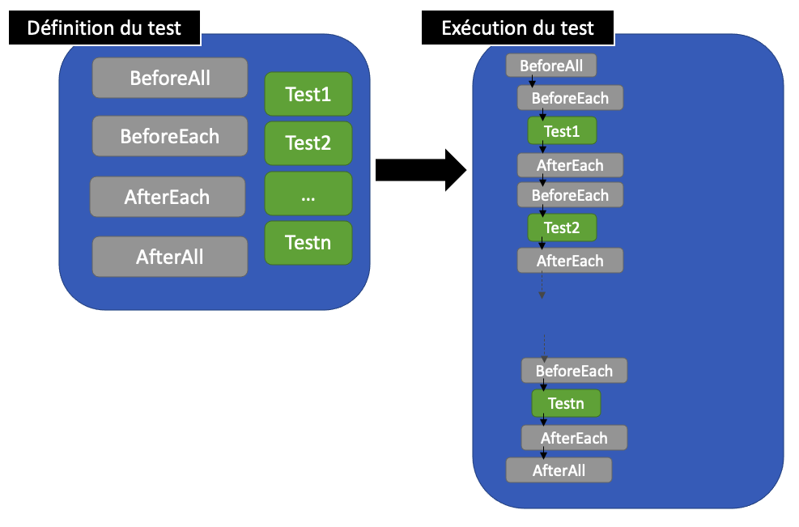
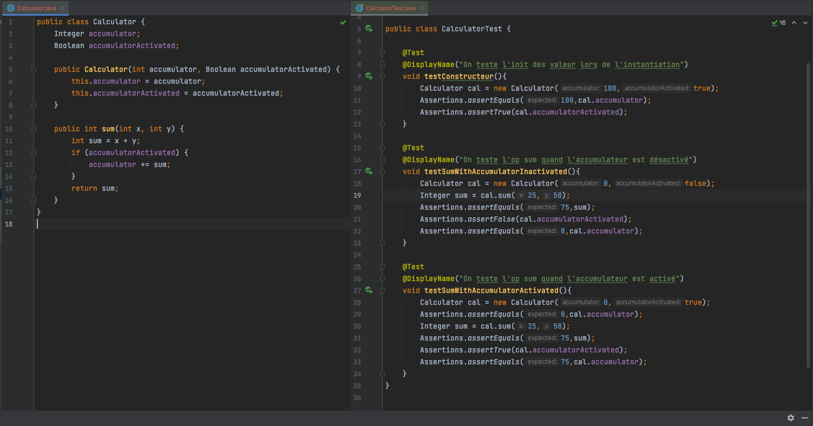
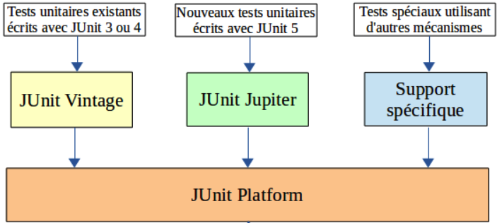
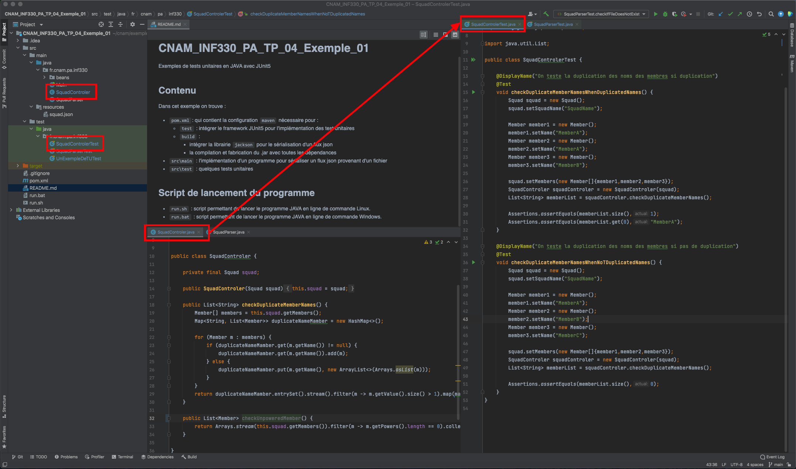

Langage JAVA
Tests Unitaires
Module INF330 - Programmation avancée
Gustavo BOBEFF
2023 - 2024
Problématique
"La réalisation de programmes peut être une tâche complexe, et il n'est pas toujours évident de
parvenir rapidement au but que l'on s'est fixé."
- deux approches : le développeur programme la pièce de logicielle (boguée) et ...
- vérification artisanale
- il constate que le programme ne fonctionne pas comme il faut sur un cas
contexte
- il va s'aider d'un débuggeur ou de la sortie texte sur la console pour
chercher le bug
- Résultats :
- Risque de passer à côté des cas où le programme ne fonctionne pas
comme il a
été prévu
- Impossibilité de reproduire les tests suite à une
évolution/correction
- écriture de tests
- il va identifier les contextes d'exécution du programme et surtout le
comportement attendu
- il va programmer de tests par rapport aux contextes indéfiés
- Résultats :
- Réduction de bugs en production si la couverture des tests est
acceptable
- Possibilité de reproduire les tests suite à une évolution/correction
du code
Les tests, la base pour assurer la qualité du logiciel
" ... je teste, tu testes, il teste ... "
- Types de tests
- unitaires : permet de tester une
unité fonctionnelle (un composant) du
système à développer.
- d'intégration : permet d'intégrer ensemble
les différentes unités (les composants) et de vérifier que les communications
inter-composant sont bien correctement réalisées.
- de validation ou de vérification : on
vérifie que le logiciel fait bien ce pour quoi il a été développé, une fois tous les
composants intégrés et la procédure associée passée en succès.
- de qualification ou d'acceptation : souvent
cette procédure de tests est un sous-ensemble de la procédure de tests de
validation.
- ... une autre classification en fonction de leur nature
- fonctionnels : on vérifie qu'une
fonctionnalité est correctement réalisée.
- techniques : on teste les aspects
non fonctionnels.
- de performance : on
cherche à mesurer certaines consommations de ressources (CPU, mémoire, ...).
- de robustesse : on cherche
à tester des problèmes de stabilités et de fiabilités dans le temps pour
pouvoir
mesurer l'évolution d'une ressource (détection de fuites mémoire,
scalabilité...).
Tests Unitaires
Wikipedia :
"Test unitaire : est une procédure permettant de vérifier
le bon fonctionnement d'une partie précise d'un logiciel ou d'une portion d'un programme [...]"
- En JAVA, l'usage général est que la portion de programme soit la méthode.
- Frameworks disponibles :
- TestNG
- Mockito
- JUnit
- ... Selenium, JBehave, Selenide, ... entre autres
- JUnit
- JUnit 4 : publié en 2005 pour permettre la prise en compte des annotations de Java 5
- JUnit 5 (Jupiter) : publié en 2017, utilise des fonctionnalités de Java 8 notamment
les lambdas, les annotations répétées, ...
- le support et l'utilisation des nouvelles fonctionnalités de Java 8 : par
exemple, les lambdas peuvent être utilisés dans les assertions
- nouvelle architecture reposant sur plusieurs modules
- le support de différents types de tests
- un mécanisme d'extension qui permet l'ouverture vers des outils tiers ou des
API
... ici on va utiliser donc JUnit 5 ...
Junit 5 : les bases
- Il propose plusieurs annotations pour la définition
et la configuration des tests.
- Ecriture de tests :
- il faut écrire une classe contenant des méthodes annotées pour implémenter les cas
de tests ou le cycle de vie des tests
- les méthodes qui implémentent des cas de tests utilisent des assertions pour faire
les vérifications requises
- Cycle de vie
- BeforeAll : code executé avant tous les tests
- BeforeEach : code executé avant chaque test
- AfterEach : code executé après chaque test
- AfterAll : code executé après tous les tests

Junit 5 : les annotations
- Les annotations pour les fonctionnalités de base sont :
|
Annotation
|
Rôle
|
|
@Test
|
La méthode annotée est un cas de test. Contrairement à l'annotation @Test de
JUnit, celle-ci ne possède aucun attribut.
|
|
@DisplayName
|
Définir un libellé pour la classe ou la méthode de test annotée.
|
|
@BeforeEach
|
La méthode annotée sera invoquée avant l'exécution de chaque méthode de la
classe annotée avec @Test.
|
|
@AfterEach
|
La méthode annotée sera invoquée après l'exécution de chaque méthode de la
classe annotée avec @Test.
|
|
@BeforeAll
|
La méthode annotée sera invoquée avant l'exécution de la première méthode de
la classe annotée avec @Test.
|
|
@AfterAll
|
La méthode annotée sera invoquée après l'exécution de toutes les méthodes de
la classe annotées avec @Test.
|
|
@Tag
|
Définir une balise sur une classe ou une méthode qui permettra de filtrer
les tests exécutés.
|
|
@Disabled
|
Désactiver les tests de la classe ou la méthode annotée.
|
Junit 5 : les assertions
Les assertions ont pour rôle de faire des vérifications pour le test en cours. Si ces vérifications
échouent, alors l'assertion lève une exception qui fait échouer le test.
- Les assertions :
|
Egalité
|
Nullité
|
Exceptions
|
|
assertEquals()
|
assertNull()
|
assertThrows()
|
|
assertNotEquals()
|
assertNotNull()
|
|
|
assertTrue()
|
|
|
|
assertFalse()
|
|
|
|
assertSame()
|
|
|
|
assertNotSame()
|
|
|
Junit 5 : un exemple des annotations et assertions

Junit 5 : Architecture

Les dépendances (maven) :
...
...
org.junit.jupiter
junit-jupiter-engine
${junit.jupiter.version}
test
org.junit.jupiter
junit-jupiter-api
${junit.jupiter.version}
test
org.junit.jupiter
junit-jupiter-params
${junit.jupiter.version}
test
org.junit.platform
junit-platform-suite
${junit.platform.version}
test
...
Junit 5 : TD
- Clone un dépôt git git@github.com:GISMAR-S-A-R-L/CNAM_INF330_PA_TP_04_Exemple_01.git
- Ouvrir le projet avec l'outil IntelliJ
